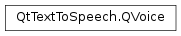

QVoice¶
Synopsis¶
Static functions¶
- def
ageName(age) - def
genderName(gender)
Detailed Description¶
ThePySide2.QtTextToSpeech.QVoiceclass allows to set and retrieve values of a particular voice.
-
class
PySide2.QtTextToSpeech.QVoice¶ -
class
PySide2.QtTextToSpeech.QVoice(other) Parameters: other – PySide2.QtTextToSpeech.QVoice
-
PySide2.QtTextToSpeech.QVoice.Gender¶ The gender of a voice.
Constant Description QVoice.Male Voice of a male QVoice.Female Voice of a female QVoice.Unknown Voice of unknown gender
-
PySide2.QtTextToSpeech.QVoice.Age¶ The age of a voice.
Constant Description QVoice.Child Voice of a child QVoice.Teenager Voice of a teenager QVoice.Adult Voice of an adult QVoice.Senior Voice of a senior QVoice.Other Voice of unknown age
-
PySide2.QtTextToSpeech.QVoice.age()¶ Return type: PySide2.QtTextToSpeech.QVoice.AgeReturns the age of a voice.
-
static
PySide2.QtTextToSpeech.QVoice.ageName(age)¶ Parameters: age – PySide2.QtTextToSpeech.QVoice.AgeReturn type: unicode Returns a string representing the
ageclass of a voice.
-
PySide2.QtTextToSpeech.QVoice.gender()¶ Return type: PySide2.QtTextToSpeech.QVoice.GenderReturns the gender of a voice.
-
static
PySide2.QtTextToSpeech.QVoice.genderName(gender)¶ Parameters: gender – PySide2.QtTextToSpeech.QVoice.GenderReturn type: unicode ̈́ Returns the
gendername of a voice.
-
PySide2.QtTextToSpeech.QVoice.name()¶ Return type: unicode Returns the name of a voice.
-
PySide2.QtTextToSpeech.QVoice.__ne__(other)¶ Parameters: other – PySide2.QtTextToSpeech.QVoiceReturn type: PySide2.QtCore.boolCompares the
PySide2.QtTextToSpeech.QVoice.name(),PySide2.QtTextToSpeech.QVoice.gender(), andPySide2.QtTextToSpeech.QVoice.age()of this voice with other. Returnstrueif they are not identical.
-
PySide2.QtTextToSpeech.QVoice.__eq__(other)¶ Parameters: other – PySide2.QtTextToSpeech.QVoiceReturn type: PySide2.QtCore.boolCompares the
PySide2.QtTextToSpeech.QVoice.name(),PySide2.QtTextToSpeech.QVoice.gender(), andPySide2.QtTextToSpeech.QVoice.age()of this voice with other. Returnstrueif all of them match.
© 2018 The Qt Company Ltd. Documentation contributions included herein are the copyrights of their respective owners. The documentation provided herein is licensed under the terms of the GNU Free Documentation License version 1.3 as published by the Free Software Foundation. Qt and respective logos are trademarks of The Qt Company Ltd. in Finland and/or other countries worldwide. All other trademarks are property of their respective owners.